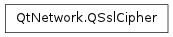

QSslCipher ¶

Synopsis ¶
Functions ¶
- def __eq__ (other)
- def __ne__ (other)
- def authenticationMethod ()
- def encryptionMethod ()
- def isNull ()
- def keyExchangeMethod ()
- def name ()
- def protocol ()
- def protocolString ()
- def supportedBits ()
- def usedBits ()
Detailed Description ¶
The PySide.QtNetwork.QSslCipher class represents an SSL cryptographic cipher.
PySide.QtNetwork.QSslCipher stores information about one cryptographic cipher. It is most commonly used with PySide.QtNetwork.QSslSocket , either for configuring which ciphers the socket can use, or for displaying the socket’s ciphers to the user.
- class PySide.QtNetwork. QSslCipher ¶
- class PySide.QtNetwork. QSslCipher ( other )
- class PySide.QtNetwork. QSslCipher ( name , protocol )
-
Parameters: - protocol – PySide.QtNetwork.QSsl.SslProtocol
- other – PySide.QtNetwork.QSslCipher
- name – unicode
Constructs an empty PySide.QtNetwork.QSslCipher object.
Constructs an identical copy of the other cipher.
- PySide.QtNetwork.QSslCipher. authenticationMethod ( ) ¶
-
Return type: unicode Returns the cipher’s authentication method as a PySide.QtCore.QString .
- PySide.QtNetwork.QSslCipher. encryptionMethod ( ) ¶
-
Return type: unicode Returns the cipher’s encryption method as a PySide.QtCore.QString .
- PySide.QtNetwork.QSslCipher. isNull ( ) ¶
-
Return type: PySide.QtCore.bool Returns true if this is a null cipher; otherwise returns false.
- PySide.QtNetwork.QSslCipher. keyExchangeMethod ( ) ¶
-
Return type: unicode Returns the cipher’s key exchange method as a PySide.QtCore.QString .
- PySide.QtNetwork.QSslCipher. name ( ) ¶
-
Return type: unicode Returns the name of the cipher, or an empty PySide.QtCore.QString if this is a null cipher.
See also
- PySide.QtNetwork.QSslCipher. __ne__ ( other ) ¶
-
Parameters: other – PySide.QtNetwork.QSslCipher Return type: PySide.QtCore.bool Returns true if this cipher is not the same as other ; otherwise, false is returned.
- PySide.QtNetwork.QSslCipher. __eq__ ( other ) ¶
-
Parameters: other – PySide.QtNetwork.QSslCipher Return type: PySide.QtCore.bool Returns true if this cipher is the same as other ; otherwise, false is returned.
- PySide.QtNetwork.QSslCipher. protocol ( ) ¶
-
Return type: PySide.QtNetwork.QSsl.SslProtocol Returns the cipher’s protocol type, or QSsl.UnknownProtocol if PySide.QtNetwork.QSslCipher is unable to determine the protocol ( PySide.QtNetwork.QSslCipher.protocolString() may contain more information).
- PySide.QtNetwork.QSslCipher. protocolString ( ) ¶
-
Return type: unicode Returns the cipher’s protocol as a PySide.QtCore.QString .
- PySide.QtNetwork.QSslCipher. supportedBits ( ) ¶
-
Return type: PySide.QtCore.int Returns the number of bits supported by the cipher.
- PySide.QtNetwork.QSslCipher. usedBits ( ) ¶
-
Return type: PySide.QtCore.int Returns the number of bits used by the cipher.